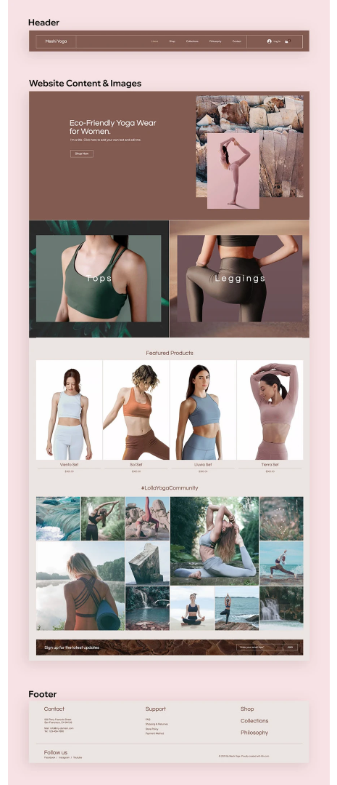

There are some components of websites that are so essential to web design that all sites must contain them in order to function properly. Together these parts form the backbone of your website:
01. Header & menu
The header is the uppermost part of a website. It’s often the first thing that visitors see when they enter a site and almost always contains the brand’s logo as well as the website menu. This website menu is the map of the site that helps visitors find what they’re looking for, whether it’s details about your product or information about your company.
02. Images
Immediately below the header is some form of image, series of images or sometimes a video. Together, the header and main image comprise the top section of your website - often referred to as above the fold - and are essential in creating a good first impression. The featured visual, in particular, makes a marked difference in whether users stay on your website or abandon seconds after entering.
03. Website content
All sites contain content. Content typically means the words written on your site that explain what your website is about, what you have to offer and how site visitors can take advantage of your offerings.
Website content covers a wide array of things. It often refers to the paragraphs that explain your site’s mission, but it can also mean the one word that is placed on your buttons.
04. Footer
Simply put, a footer is the bottom most part of any site. It usually contains a sitemap with links to the pages available on your site. This can help visitors find all of your offerings, including those that may not have made the cut for your header.

It is more convenient and clearer for users to use the site, and it is easier for the developer to write HTML code and maintain it.
Here are the sections that can be present on a web page.
• Navigation — the main links to go to different web pages of the site.
• The "header" is the introductory upper part of the web page containing the site logo, its name, site search, navigation, etc.
• The main content — for informational sites is an article with the title, date of publication, author, comments to the article.
• A sidebar is usually a vertical block containing secondary information, such as a search form, menu, voting, advertising, etc.
• The "basement" is the final lower part of a web page, usually containing contact and legal information. These are phone numbers, addresses, directions, social network buttons, duplicate navigation, etc.
INSTRUCTIONS
Divide your future web-page into the following sections
It will be look like this
<html>
<head>
<title>Page title</title>
</head>
<body>
<h1>This is a heading</h1>
<p>This is a paragraph.</p>
<p>This is another paragraph.</p>
</body>
<footer>
</footer>
</html>